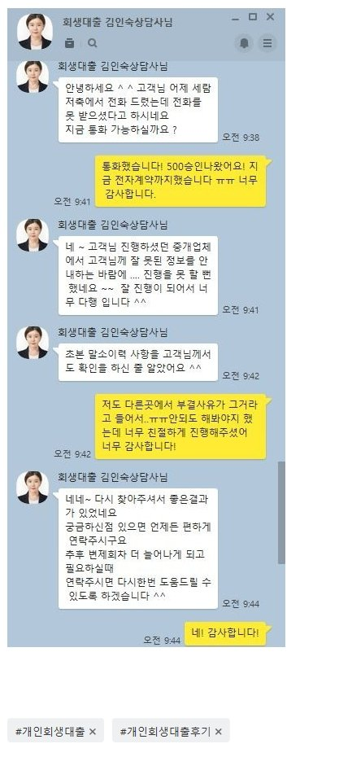

[개인회생자대출] 김인숙상담사님 너무 감사합니다!
재직형태: 1인 사업자
사업기간: 2년
사대보험 가입 : 유
소득: 연2000-2500 정도
채무내역: 없음
필요서류: 신분증,원초본,건강보험득실확인서,통장사본
개인회생 인가후 회차가 4회차 인데..
대출이 필요해서 여기저기 다른상담사 통해 6곳정도 심사넣어보고
부결이 되서... 희망을 버리고있다가 마지막으로 찾아보고 안되면 포기해야겠다
하고 알아보다가 김인숙상담사님 만나서 대출진행했어요!
부결내용일 초본에 말소이력이 있어서 안된다 그리고 내부규정에 안맞아서 안된다
이런내용이라 여기도 안되거라 생각했는데 상담사님 통해서 제 내용 듣고 가능한곳이
한곳 더 있다고 해서 심사 진행하였습니다.
1인개인사업자이고 미납은 없지만 변제회차가 짧고해서 걱정했는데
원하는 정도 승인 나와서 진행 완료했습니다.
또 서류도 초본,건강보험확인서,통장사본 이정도라 다른곳보다 간단했어요
상담사님도 친절하고 하나하나 체크해서 심사가능한곳 찾아주시고 너무감사합니다.
다른분들도 다 부결나따고 ...희망버리지 말고 상담받아보세요!
